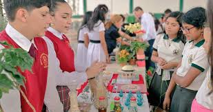
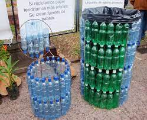
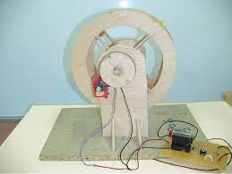

PORTAL DEL CENTRO DE BACHILLERATO TECNOLOGICO INDUSTRIAL Y DE SERVICIOS NUMERO NO.243


PORTAL DEL CENTRO DE BACHILLERATO TECNOLOGICO INDUSTRIAL Y DE SERVICIOS NUMERO NO.243
PROYECTOS
CONSTRUYETE
Formar personas con conocimiento Tecnologicos en las areas industrial, comercial y de servicios, a traves de las preparacion de bachilleres y profesionales tecnicos, con el fin de contribuir al desarrollo sustentable del pais
Ser una institucion de Educacion Media Superior, certificada orientada al aprendizaje y el desarrollo de conocimientos Tecnologicos y Humanisticos
REDES SOCIALES
PROYECTOS ESCOLARES
La idea de crear y gestionar hortalizas organicas se origino sobre la concientizacion del uso excesivo de aplicacion de quimicos en las hortalizas, mediante grupos de alumnos que experimentan y demuestran como se puede producir el mismo producto usando abonos organicos, esto es una pratica que va de la mano con el medio ambiente, ademas sirve como integracion y regularizacion en aquellos alumnos de regazo escolar.
PROYECTOS DE RECICLAJE
En nuestro pais cada vez generamos mas basura sin darnos cuenta que muchos de los materiales podemos utilizarlos nuevamente para un uso comun en nuestro etorno. con estos proyectos se pretende que el alumno y el docente se de cuenta sobre las diferentes manualidades u objetos que se pueden hacer y que la utilizamos en la vida diaria, mediante equipos de trbajo cada uno presenta diferentes propuestas que se pueden hacer con materiales reciclados.
PROYECTOS TECNOLOGICOS
Un proyecto tecnologico es una secuencia de tareas o actividades relacionadas entres si, que tiene como objetivo la creacion de un producto o servicio que brinde una solucion, para lo que se diseña sea efectivo. debe resolver el problema mejor que otra propuesta con la misma funcion. El resultado final es un modelo o prototipo a escala. Se debe tener presente que, cuando hablamos de tecnologias, no nos referimos a las nuevas si no a las mas apropiadas
Mtro.Edras Mejia Ramirez
Director de Coordinacion de Proyectos
Mtro.Jhony Jordan Roblero Galindo
Presidente de ALIDET
Mtro.Maugro Joseim GOmez Roblero
Evaluador 1 de Proyectos Locales
Mtro.Ingrid V. Ordaz Pastor
Evaluador 2 Proyectos Locales
Mtro.Luis David Farrera Ruiz
Coordinador de Proyectos Locales

Calle Central poniente s/n barrio san francisco c.p.30900(telefono y faz: 962-64-10262)
e-mail intitucional: cbtis243.@uemtis.sems.gob.mx